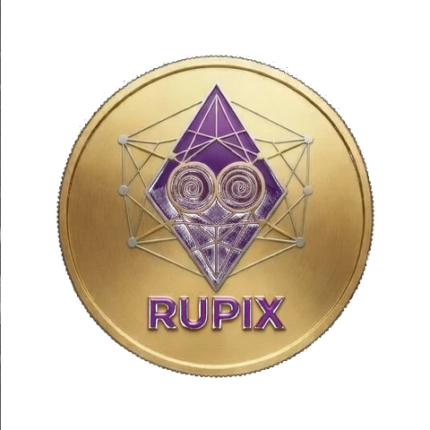
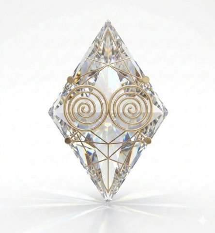
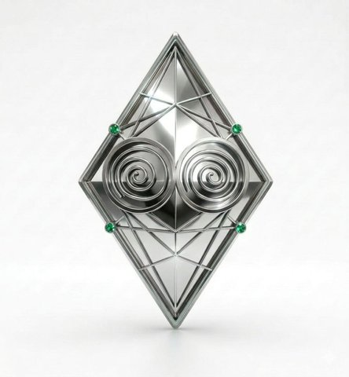
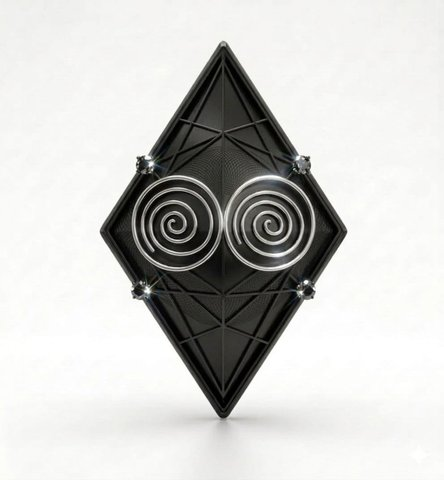
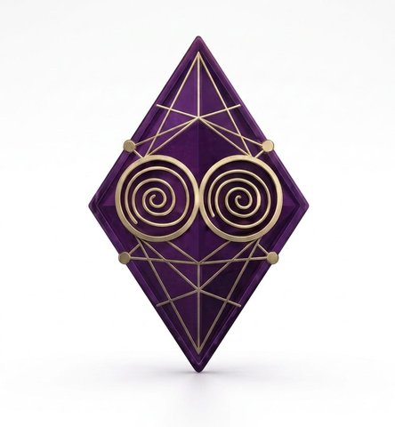

No confíes.
Verifica.
Don't trust.
Verify.
Rupix es una moneda digital que solo puede volverse más escasa: existirán 42,000,000 y nunca se podrá crear una más. Sin pre-mine. Sin reserva de fundador. Sin atajos. Construida en público. Rupix is digital money that can only become scarcer: 42,000,000 will ever exist and not one more can be created. No pre-mine. No founder reserve. No shortcuts. Built in public.

¿Para qué existe Rupix? Why does Rupix exist?
Para crear el dinero más escaso que haya existido — y que nadie tenga que creerlo. Solo comprobarlo. To create the scarcest money that has ever existed — and so no one has to believe it. Only verify it.
Bitcoin demostró que puede existir dinero digital con cantidad fija para siempre. Rupix da un paso más: aquí la cantidad solo puede bajar. Bitcoin proved that digital money with a fixed supply forever can exist. Rupix goes one step further: here the supply can only go down.
Lo que no existe en ninguna otra red es la escalera: cinco niveles donde crear una pieza superior exige destruir diez de la inferior. Un King cuesta 10,000 Gold convertidos en ceniza. Llenar los 2,100 Kings quemaría 21 millones — la mitad de todo el Gold que existirá jamás. Y cada nivel se abre en un halving distinto: nadie, ni el fundador, puede adelantarse. What exists in no other network is the ladder: five levels where creating a higher piece requires destroying ten of the lower one. One King costs 10,000 Gold turned to ash. Filling all 2,100 Kings would burn 21 million — half of all the Gold that will ever exist. And each level opens at a different halving: no one, not even the founder, can get ahead.
Encima, cada transacción destruye una fracción, y el spam se castiga por byte: entre más fuerte el ataque, más grande el regalo para todos. On top of that, every transaction destroys a fraction, and spam is punished per byte: the stronger the attack, the bigger the gift to everyone.
Llegues cuando llegues, llegas a algo que se está volviendo más raro. Whenever you arrive, you arrive at something that is becoming rarer.
Una L1 sobre BlockDAG, con economía propia An L1 on a BlockDAG, with its own economics
Rupix es una blockchain Layer 1 con consenso Proof of Work sobre un BlockDAG — no una cadena lineal. Está construida sobre la arquitectura GHOSTDAG de Kaspa, publicada en código abierto bajo licencia ISC. El motor de consenso es de ellos y no lo tocamos. Lo nuestro es la economía encima: Rupix is a Layer 1 blockchain with Proof of Work consensus on a BlockDAG — not a linear chain. It is built on Kaspa's GHOSTDAG architecture, published as open source under the ISC license. The consensus engine is theirs and we don't touch it. Ours is the economy on top:
- 5 niveles de escasez con quema permanente para ascender de nivel 5 scarcity levels with permanent burning to move up a level
- Supply absoluto de 42,000,000 RUPIX, sellado en el protocolo y demostrable por test Absolute supply of 42,000,000 RUPIX, sealed in the protocol and provable by test
- Genesis sin pre-mine: el primer RUPIX se minará después del bloque 0, como Bitcoin Genesis with no pre-mine: the first RUPIX will be mined after block 0, like Bitcoin
-
Identidad propia: parámetros de red, direcciones
rupix:, denominaciones en rupias Its own identity: network parameters,rupix:addresses, denominations in rupias
¿Qué es una L1?What is an L1?
Una blockchain "de primera capa": la red base, con sus propias reglas y su propia moneda. No vive encima de otra — como Bitcoin, es su propio territorio. A "layer one" blockchain: the base network, with its own rules and its own coin. It doesn't live on top of another — like Bitcoin, it's its own territory.
¿Qué es un BlockDAG?What is a BlockDAG?
En vez de una fila india de bloques —uno tras otro—, es una red donde varios bloques pueden nacer al mismo tiempo y todos cuentan, todos se ordenan. Más velocidad, sin tirar trabajo a la basura. Instead of a single-file line of blocks —one after another—, it's a network where several blocks can be born at the same time and all count, all get ordered. More speed, no work thrown away.
¿Qué es Proof of Work?What is Proof of Work?
Para crear monedas hay que trabajar: computadoras resolviendo problemas que cuestan energía real. Nadie recibe nada gratis. Ni el fundador. To create coins you have to work: computers solving problems that cost real energy. No one gets anything for free. Not even the founder.
La escalera de escasez The scarcity ladder
Cada nivel se obtiene quemando 10 unidades del anterior. La quema es irreversible y queda registrada en la blockchain para siempre — nadie puede revertirla: ni fundadores, ni mineros, ni ningún acuerdo futuro. Each level is obtained by burning 10 units of the previous one. Burning is irreversible and recorded on the blockchain forever — no one can undo it: not founders, not miners, not any future agreement.
minadomined

10× Gold 🔥

10× DiamanteDiamond 🔥

10× PlatinoPlatinum 🔥

10× RodioRhodium 🔥
Llenar el supply completo de Kings implicaría destruir 21 millones de Gold — la mitad de todo el que existirá jamás. Los topes son máximos permitidos, no metas: puede que el último King nunca llegue a existir. Eso no es un defecto — es la escasez funcionando. Filling the entire Kings supply would require destroying 21 million Gold — half of all that will ever exist. The caps are permitted maximums, not goals: the last King may never come to exist. That's not a flaw — that's scarcity working.
Cuatro fiestas ya tienen fecha Four celebrations already have a date
Cada halving hará dos cosas a la vez: cortar a la mitad la creación de Gold nuevo, y abrir la puerta de un nivel que estaba cerrado para todo el mundo. Antes de su halving, ningún nivel puede existir. Para nadie. Each halving will do two things at once: cut the creation of new Gold in half, and open the door to a level that was closed to everyone. Before its halving, no level can exist. For anyone.
¿Qué es un halving?What is a halving?
Cada ~16 meses, la cantidad de Gold nuevo que aparece se corta a la mitad. Como una mina que produce cada vez menos oro. Sucede solo, por regla — nadie lo decide, nadie lo puede evitar. Every ~16 months, the amount of new Gold appearing is cut in half. Like a mine producing less and less gold. It happens on its own, by rule — no one decides it, no one can stop it.
¿Por qué esperar los niveles?Why wait for the levels?
Nadie puede tener un Diamante antes del primer halving. Ni siquiera quien creó Rupix. La puerta se abre el mismo día, a la misma hora, para todo el mundo por igual. No one can hold a Diamond before the first halving. Not even Rupix's creator. The door opens on the same day, at the same time, for everyone equally.
¿Qué pasa mientras tanto?What happens meanwhile?
Cada uso de la red destruirá un poquito de Gold para siempre. Así que cuando una puerta por fin se abre, cruzarla cuesta más que el día anterior. Los niveles altos nacen caros — por diseño. Every use of the network will destroy a little Gold forever. So when a door finally opens, crossing it costs more than the day before. High levels are born expensive — by design.
No creas lo que lees. Verifícalo tú mismo Don't believe what you read. Verify it yourself
La emisión total de Rupix no es una promesa de sitio web. Es un test en el código que tu propia máquina puede ejecutar. Clona el repositorio y corre: Rupix's total emission is not a website promise. It's a test in the code your own machine can run. Clone the repository and run:
Sí: la emisión real es 41,999,994.96 — cinco RUPIX bajo el techo, por truncamiento entero en los últimos halvings. El mismo efecto existe en Bitcoin. Lo decimos nosotros antes de que lo calcules tú. Yes: real emission is 41,999,994.96 — five RUPIX under the cap, due to integer truncation in the final halvings. The same effect exists in Bitcoin. We say it before you calculate it.
Construcción en público, v0.3.0 Building in public, v0.3.0
Reconstruido desde kaspad v0.12.22 limpio, tras descartar 13 días de código heredado que no podíamos auditar. Las cicatrices también están en el historial de commits. Rebuilt from clean kaspad v0.12.22, after discarding 13 days of inherited code we couldn't audit. The scars are in the commit history too.
Hoy verificableVerifiable today
- Identidad de red completa: puertos, DNS, direcciones
rupix:Full network identity: ports, DNS,rupix:addresses - Denominaciones propias: RUPIX y rupiasOwn denominations: RUPIX and rupias
- Emisión: 0.5 RUPIX/bloque, halving cada 42,000,000 bloquesEmission: 0.5 RUPIX/block, halving every 42,000,000 blocks
- Sin fase privilegiada: mismas reglas desde el bloque 1No privileged phase: same rules from block 1
- Supply total demostrable por testTotal supply provable by test
En desarrolloIn development
- Genesis definitivo con subsidy cero — premine cero byte por byteFinal genesis with zero subsidy — zero premine byte by byte
- Sistema de 5 niveles con quema 10:15-level system with 10:1 burning
- Desbloqueo de niveles por halvingLevel unlocking at each halving
- Quema por transacciónPer-transaction burn
- Testnet públicaPublic testnet
La base y el camino The foundation and the path
Nuestra base. Creemos en la tecnología GHOSTDAG de Kaspa: un BlockDAG que persigue las tres cosas que toda blockchain quiere — descentralización, seguridad y velocidad. Por eso partimos de ahí, con su licencia abierta y nuestro agradecimiento. Our foundation. We believe in Kaspa's GHOSTDAG technology: a BlockDAG chasing the three things every blockchain wants — decentralization, security and speed. That's why we start there, with its open license and our gratitude.
Rupix es lo que estamos construyendo encima: una economía de escasez en 5 niveles, donde cada transacción quemará y el supply solo puede bajar. Y lo hacemos frente a los ojos de todos — cada commit, cada prueba, cada error, en público. Nada que esconder. Todo que verificar. Rupix is what we're building on top: a 5-level scarcity economy where every transaction will burn and the supply can only go down. And we're doing it in front of everyone — every commit, every test, every mistake, in public. Nothing to hide. Everything to verify.